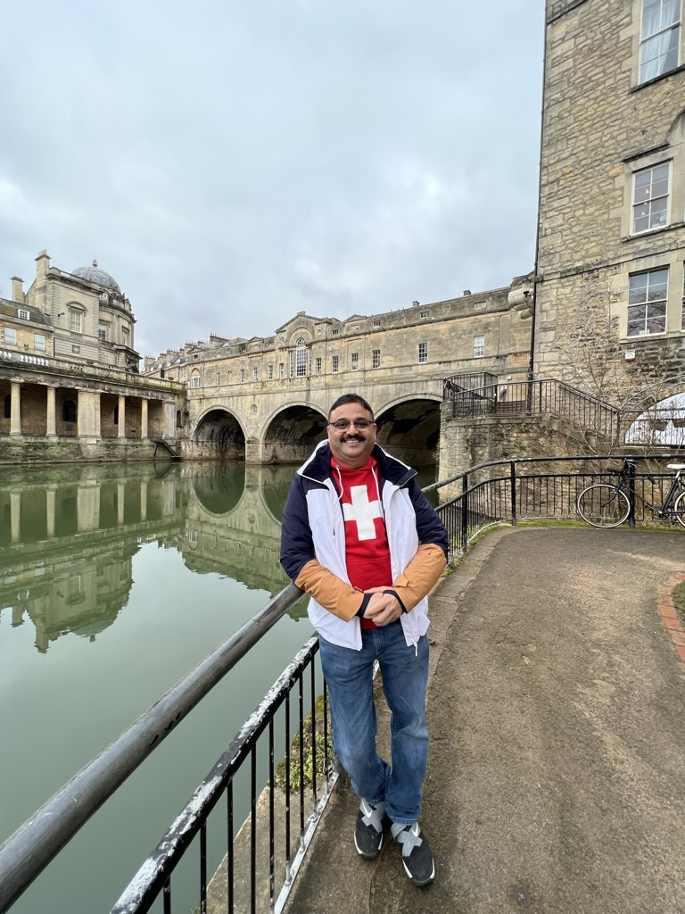
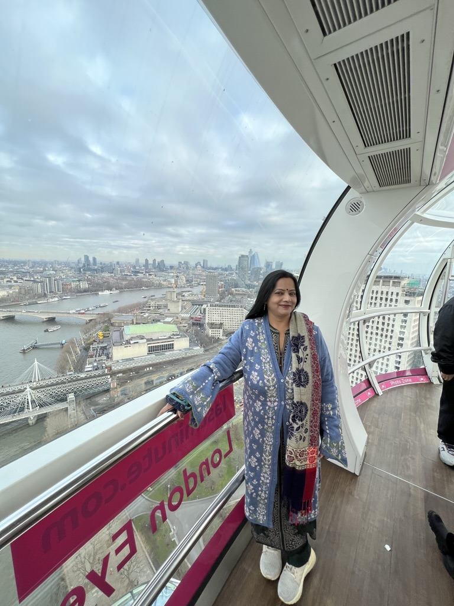
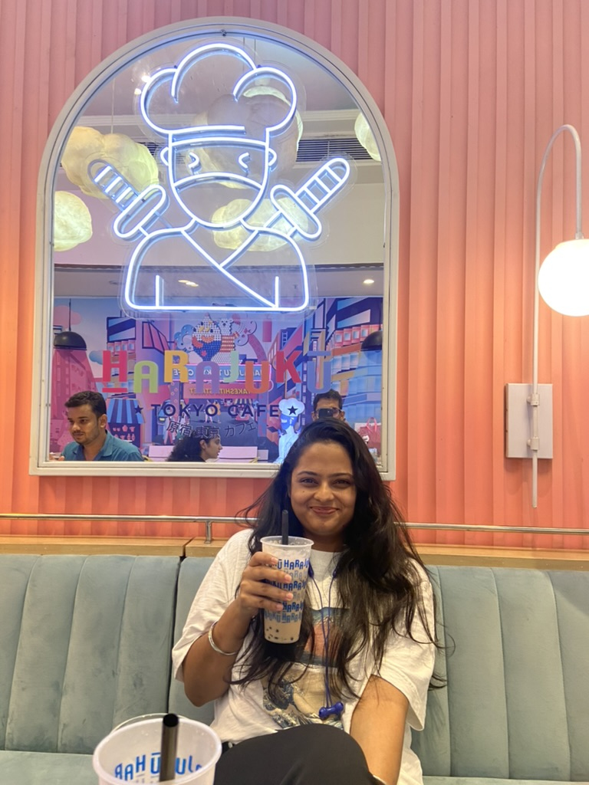

More about me
Experiences
-
AmdocsJul 2022 - Aug 2023
I Started my Journey at amdocs as a fresher in 2022 stright out of college, they hired me as a software developer. As a developer i was tasked with development of automation frameworks using selenium in java, I was kind off disappointed due to me coming from a skillset of development and them hiring me as a developer but putting me up in a testing project however MBA bring my ultimate goal i decided to continue. I receieved training from amdocs in technologies such as core java, spring, mysql and many more, amdocs built my technical skillset. I was found to be exceeding expectations at the company. I even relocated to pune in the month of April to continue office in offline mode, i met my team offline and everyone was charming, i was a delight to work with.
Unfortuantely they laid me off in July 2023, due to recession in the US. I'm really greatful to amdocs for all the skills and experiences i've receieved this past year but its time to move on now. I know its going to be challengin but Hey! thats how you grow.
- Developed efficient Selenium-based automation framework in java using Spring, featuring multithreading, custom reporting, video recording, screenshot capture capabilities reducing manual efforts by over 80%.
- Engineered critical framework modifications by developing 4 new utilities using JavaScript, TypeScript, Axios for the company's Headless Testing JavaScript framework improving functionality.
- Exceeded role expectations by delivering more than 10 feature demos to global stakeholders, with 4 accomplished within a 2-month period, 2 times the team’s average frequency
- Facilitated the stability of the organization's CI/CD pipelines on Jenkins. Handling micro-service deployments using tools such as OpenShift, Kubernetes. Also managed workflow orchestrations using Camunda ensuring the functionality of application
- Adopted new technologies, like Playwright, reducing script execution times by more than 70% and script development times by 40%, improving overall framework efficiency
Acievements and acomplishments
-
Mankind PharmaJan 2022 - Jun 2022

Mankind holds a very special spot in my heart, it was my first ever corporate experience and the seniors there were delight. They made me feel special along the Journey and never made me feel i wasnt good enough. Even though i was there for only 6 months but thoso 6 months made a huge impact on me as a professional as well as an individual. I was interning here as a information technology intern tasked with data visualization using tableau, performing ETL on huge datasets and providing analysis dashboards to upper management. I was also responsible for functional and requirement analysis of Company's field forca applications, identify its strengths and opportunities for improvements. I learn't a lot about supply chains and how it funcitons. I made good friends here even though people were experienced and mentors to me but they always made me feel like i was part of a big family.
- Created advanced supply chain data analysis dashboards with Tableau and proprietary tools, leading to a 15% increase in supply chain responsiveness
- Incorporated SQL and TabPy for complex data manipulation and visualization tasks, producing impactful data-driven insights that guided senior management's strategic decisions, contributing to a 35% increase in efficiency in decision-making processes
- Led comprehensive functional and requirement analysis of high-performance Field Force application’s modules and features, identified strengths and opportunities for improvements and proposed 2 new enhancements to streamline workflow processes boosting efficiency of company’s field force
Acievements and acomplishments
Meet My family
-
My Dad
information about dad
-
My Mom
information about Mom
-
My Sister
information about sister
-
And... Happy
information about Happy
Skills and Technologies
-
Languages
- Java
- Python
- JavaScript
- HTML
- MySQL
-
Frameworks
- Spring
- React.JS
- Node.JS
- Selenium
- TestNG
-
Library
- Bootstarp
- Bootstarp
-
Tools
- GIT
- Bootstarp
Personal life
Hobbies
Travel
Music
My top songs
My top artists
My top genres
Photography
Social
Some content/message before i present links